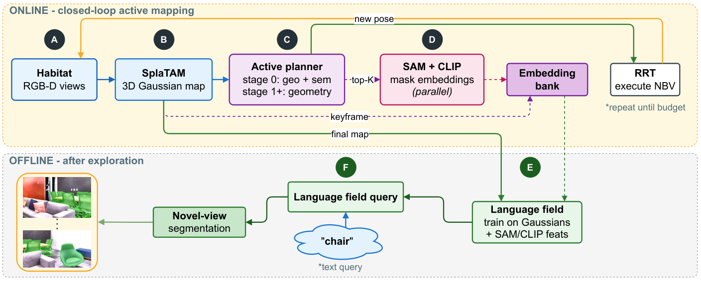

Paper Analysis
01 · The Task and the Feedback Path
被动语义建图接受一段固定相机轨迹，把二维语义附着到重建结果上。主动建图则还能决定下一次从哪里观察。AOV-GS 的问题是：如果最终希望地图回答文本查询，采集阶段是否应该考虑当前语义证据的不足，而不只追求几何覆盖？
这里的 next-best-view（NBV）是从一组可执行候选位姿中选下一视角；language field 是能在三维基元或渲染像素上查询语言特征的表示。两者的联系经过数据采集：语义分数改变移动决策，移动改变真实观测，观测再影响几何与语言地图。论文没有让离线语言损失反向优化在线规划器。
输入是带位姿 RGB-D，输出是可渲染的高斯地图以及文本查询的新视角分割。相机位姿来自模拟器真值，因此这不是对定位漂移鲁棒性的实验，也不是仅输入 RGB 的前馈流式重建。
Paper Analysis
02 · Reading the Original Pipeline

Rodion Shkokov, Tatiana Zemskova, and Dmitry Yudin · Original figure, unmodified · arXiv non-exclusive distribution license; limited reproduction for scholarly commentary, not a CC license · Paper & Caption ↗
图 1 上半部分 A–B：Habitat 在已执行位姿提供 RGB-D，SplaTAM 风格的各向同性高斯地图通过 RGB、深度 L1 损失更新。体素探索图负责候选位姿与碰撞约束，RRT 局部规划器负责执行选出的视角。
C–D：先按几何收益筛出 top-K 候选，再从当前高斯地图渲染候选 RGB，送入冻结的 SAM 与 CLIP。候选视角的语义不是从尚未执行的真实相机图像偷看得到，而是受当前地图已表示内容的限制。渲染中的缺失和伪影也会进入语义打分。
Embedding bank 只写入已到达关键帧的实际观测特征。候选渲染特征仅用于当次打分，不写入该 bank；否则系统可能把自己预测出的内容误当成已观察证据。实际关键帧特征提取在后台线程运行，但候选语义评分本身仍有明显计算成本。
下半部分 E–F：探索结束后，收集的区域 CLIP 特征监督 LangSplatV2 语言场。文本通过 CLIP 编码，与多尺度渲染特征匹配，产生新视角二值分割。在线采集和离线语言场训练在图中有明确边界。
Paper Analysis
03 · What the Novelty Score Measures
几何分数从候选视角的未观测 silhouette 像素数 N_v 出发，同时用移动距离 l_v 调整。论文中的 σ 表示在候选集合上做 softmax，而不是逐元素 sigmoid。若所有 N_v 为正，softmax(log N_v) 就等于 N_v / ΣN；这是对公式的直接化简。
语义分数对每个候选 mask 的单位特征 e_i，找历史 bank 中余弦最相似的 b_j，再取 1−相似度，并对所有 mask 做均值。它测的是表示空间中的差异，不是类别熵、实例覆盖率，也不是校准后的信息增益。相同类别的新实例可能不新颖；光照和渲染伪影也可能显得新颖。
最后把几何分数乘以语义 softmax。语义只重排几何靠前的 K 个候选，默认 K=8；bank 为空时跳过语义评分。粗探索 stage 0 使用这一项，stage 1 及后续重新只用几何。语义因此不会在整个流程中始终支配移动。
个人分析：这种乘积把语义视为几何可行候选之间的偏好。在一个语义贫乏但几何必须探索的区域，几何候选筛选仍很关键；不能把该分数直接解释为“下一帧对重建误差的预期下降”。
I_geo(v) = softmax_v(log N_v)
w_geo(v) = [1 − softmax_v(l_v)] I_geo(v)
I_sem(v) = mean_i [1 − max_{b in B} cosine(e_i, b)]
w(v) = w_geo(v) softmax_v(I_sem(v))Paper Analysis
04 · Training, Querying, and Cost
SAM ViT-H 与 CLIP ViT-B/16 均冻结，区域向量为 512 维。离线阶段对 mask 向量做 k-means 初始化全局码本，每个高斯学习码本上的稀疏系数。论文明确将语言场训练与几何细化解耦，因此语言拟合误差不会在这里直接纠正深度或位姿。
查询采用 s/m/l 多尺度余弦图，默认阈值 0.55，并使用 LangSplatV2 的“other”负提示。office0 单次消融中，去掉负提示得到 25.1% mIoU，默认设置为 34.4%；输出解码协议本身是重要变量，不能只比较前端特征。
在 RTX 4070 Ti SUPER 上，候选语义评分约 8 秒/视角。office0 的 K=4、8、16 完整运行分别为 52:32、61:23、70:41；K=8 与 16 都是 34.4% mIoU，但更大的 K 更慢。新视角多尺度文本查询为 1.41 秒/查询–视角对。后台提取不能被等同于系统没有额外延迟。
官方仓库已提供探索、特征验证、语言场训练的分阶段脚本。本次核对了 README，未运行 GPU 复现。快速安装说明下载 SAM ViT-B，而论文实验写 ViT-H；复现实验前需要核对实际配置，不能把安装默认值当作论文配置。
Paper Analysis
05 · What the Controlled Experiments Establish
Replica 八个场景限制 2000 步，Matterport3D 五个场景限制 5000 步，所有比较都使用真值位姿。语义指标在未用于建图的视角上，用该视角存在的类别名作为文本查询，与二值真值 mask 比较；先汇总类别–视角对，再报告场景均值。它不是任意自由文本请求的成功率。
最有解释力的对照是保持 SAM–CLIP 和语言场一致，只改变规划策略。Replica 平均提高 1.3 个百分点，Matterport3D 提高 1.8。加入 CorrCLIP 时也要对比同样加入 CorrCLIP 的几何基线；因为在 AOV-GS 中 CorrCLIP 同时影响候选评分与关键帧特征，不能把其全部增益归因于规划。
Replica 并非每个场景都改善：office2 从 32.6 降至 28.7，office1、room0、room2 也下降。作者将部分失败与暗光、mask 碎片和物体视角选择联系起来。这是解释性分析，不是受控证明某一个因素造成下降。
五种子结果中，office0 mIoU 为 33.6±1.1 对 28.8±1.4；该语义稳定性实验只覆盖 office0，不是八场景均值的误差条。
几何方面，Replica 深度 L1 从 1.26 到 1.18 cm，但 PSNR 从 31.47 到 31.19 dB；Matterport3D 深度 L1 从 2.80 到 2.83 cm，略差。MP3D 重建指标按每个场景取 stage-1 与最终细化中更好的离线评估，比较时应保留这一条件。
| Setting | Geometry-based | AOV-GS | Interpretation |
|---|---|---|---|
| Replica mIoU (%) ↑ | 33.3 | 34.6 | 同感知栈，平均 +1.3 pp |
| Replica + CorrCLIP mIoU (%) ↑ | 33.6 | 35.6 | 匹配 CorrCLIP，+2.0 pp |
| MP3D mIoU (%) ↑ | 21.3 | 23.1 | 同感知栈，+1.8 pp |
| Replica depth L1 (cm) ↓ | 1.26 | 1.18 | 观测轨迹变化后的几何结果 |
| MP3D depth L1 (cm) ↓ | 2.80 | 2.83 | 不支持几何全面改善 |
Paper Analysis
06 · What Transfers to Streaming Memory
与 ConceptFusion 式被动融合相比，AOV-GS 把语义的作用提前到证据获取。对 LingBot-Map 更直接的启发，是评估语义能否帮助选择哪些已到达观测值得写入，而不是直接搬来机器人规划器。普通视频输入不能决定相机下一步移动，二者任务权限不同。
可检验的迁移假设是：在相同缓存容量与相同输入轨迹下，联合几何可靠性和语义互补性选择历史内容。这里必须加可靠性条件，否则新颖度会奖励噪声；还需要和仅按外观差异、仅按几何覆盖的策略比较。这是个人研究建议，不是 AOV-GS 已验证的 memory 结果。
本篇最有价值的证据链是“语义改变采集 → 改变下游语言地图表现”；它没有证明“语义损失 → 更好的网络缓存 → 更好的未来几何”。二者可以形成不同实验，但不能混用同一组结果来支持。
Discussion
Reading Questions
Does semantic novelty mean a new object?
不是。它是区域特征相对历史 bank 的余弦差异，既可能忽略同类新实例，也可能把视角、照明或渲染误差当作差异。
Does the language loss improve geometry directly?
没有这条梯度路径。语言场在探索结束后训练，与几何细化解耦；几何变化来自采集轨迹和实际观测变化。
Is the result evidence for real-time RGB-only SLAM?
不是。实验使用 RGB-D、真值位姿，候选评分约 8 秒/视角，还有离线训练。它回答的是模拟器主动语义建图问题。
Why compare matched perception stacks?
更换 SAM–CLIP 或 CorrCLIP 会改变监督与解码质量。保持这些条件一致，才能更具体地讨论语义规划带来的增益。
References
- Paper and Version ↗
- Official Code and Setup ↗
- Related Note: ActiveLang ↗
- Related Note: Semantic Fusion ↗
One original figure is reproduced for method analysis. Dates refer to the first arXiv submission; numerical results refer to the stated reading version.
Verified on 2026-10-30. Paper results refer to the linked versions. Repository references were checked on this date.